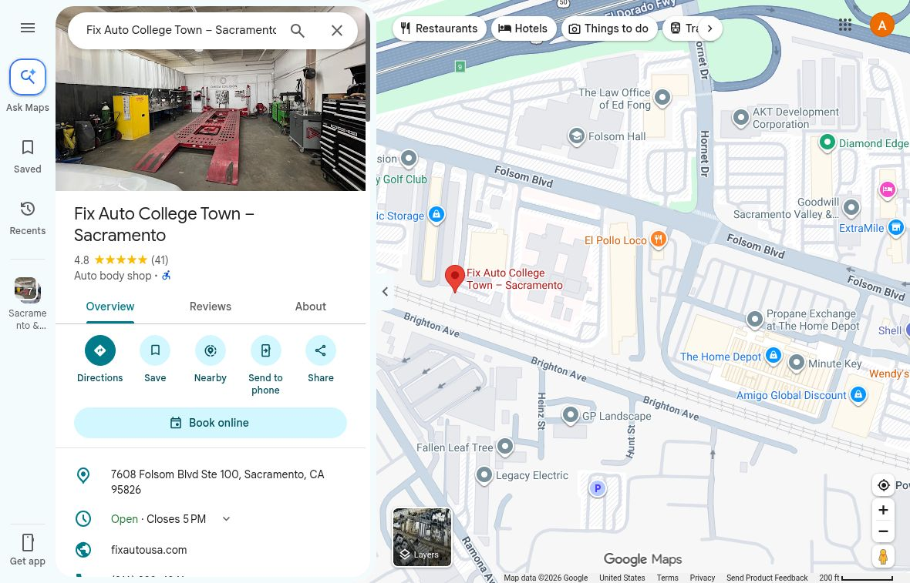
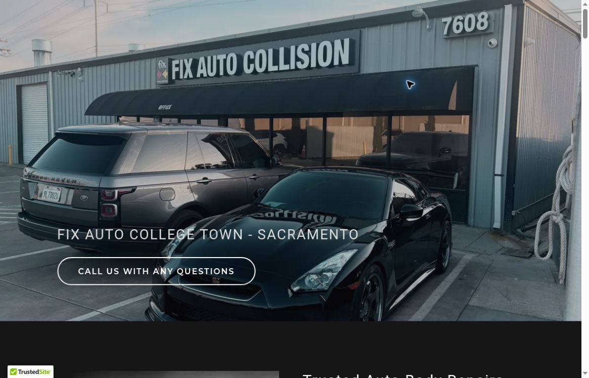
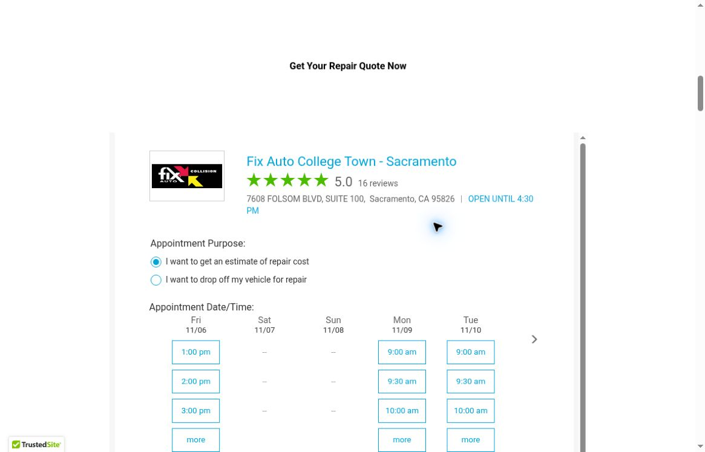
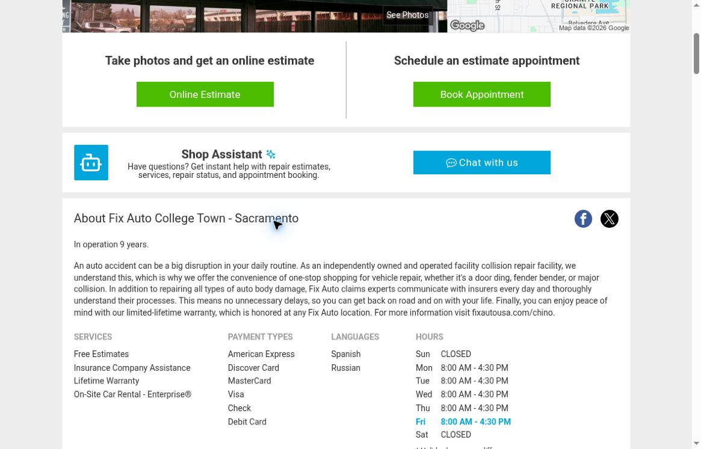
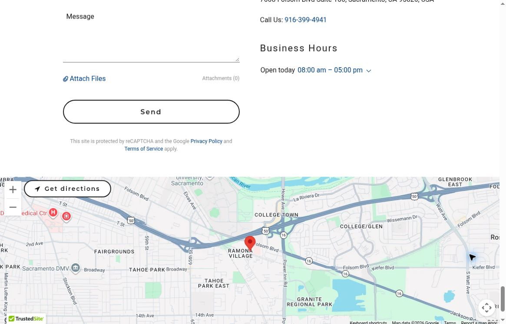
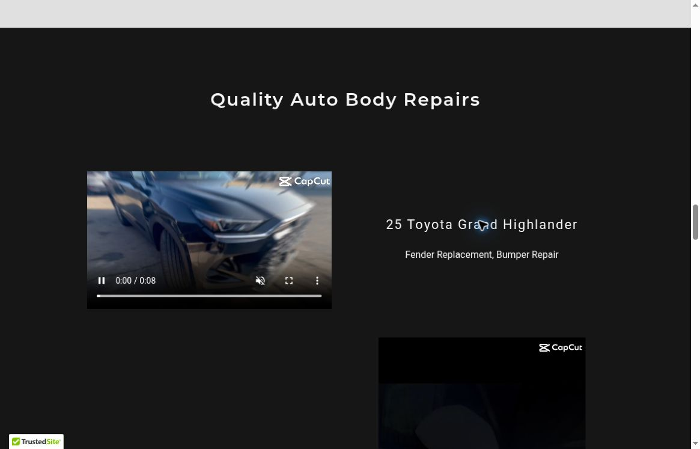
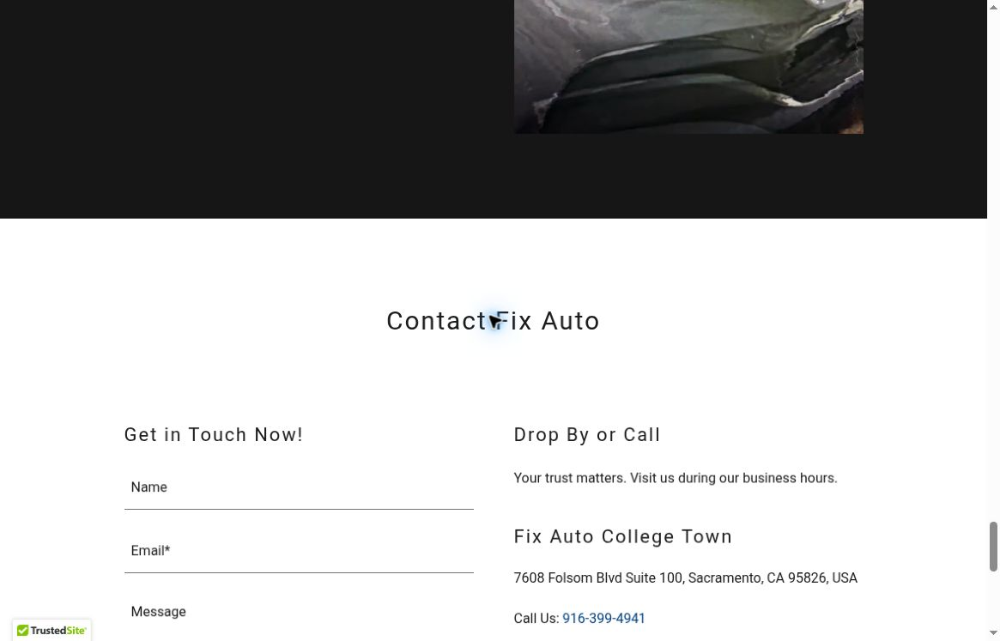
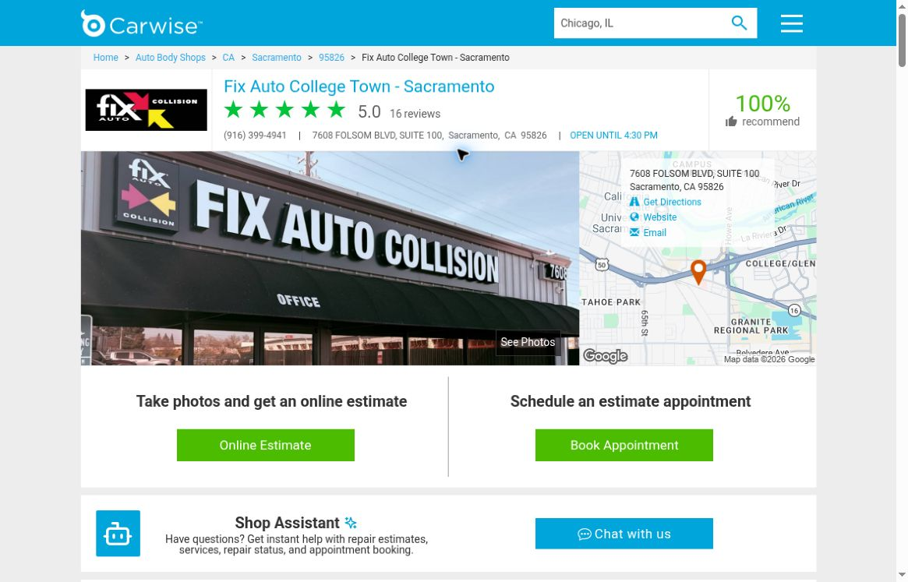
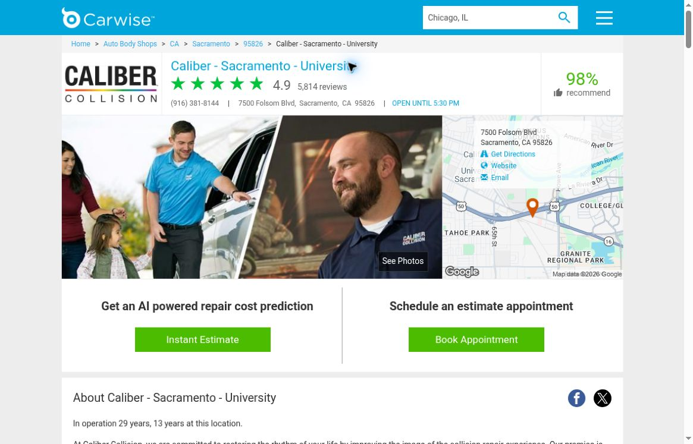

Local Meta ads
Reach nearby people on Facebook and Instagram.
A custom audit / Fix Auto College Town
We’re Vessel Archive, a local Sacramento marketing team.
A short plan for Fix Auto College Town.
Reach nearby people on Facebook and Instagram.
Real videos, photos and clear messages.
Help nearby drivers find you through Google and your site.
What you do well
Your shop already has the things a driver wants to see: real repairs, a local team and strong reviews.
Make those strengths easier to find, then help drivers take the next step.


What we found / 1 of 3
Your site’s “Get Your Repair Quote Now” section opens visit booking. Carwise also offers an online photo estimate. Give drivers a clear choice: send photos or book a visit.
Observed: two different options. The booking form loads with appointment options; neither form was submitted.


Your site shows a 5 PM close today. Carwise says 4:30 PM on weekdays. A driver could plan around the wrong time.
Observed: a 30-minute gap on Friday, Nov 6. Confirm the right hours before changing either.

What we found / 2 of 3
Your Sacramento Carwise profile ends with “For more information visit fixautousa.com/chino.” Replace it with the right shop details.
Observed in the About text. It is plain text, not a clickable link. Lost visits were not measured.
The Grand Highlander video names the work: fender replacement and bumper repair. Add a short story about the damage, the repair and the next step for a driver with a similar need.
Opportunity: add context to work you already show. We are not claiming the shop lacks videos.

What we found / 3 of 3
The contact section says “Get in Touch Now!” but does not say when staff will reply. Add a response time the team can meet, with a call option for urgent questions.
Observed on the contact section. We did not submit a message or test your actual reply speed.

Carwise shows 16 reviews for your shop. Caliber’s nearby University shop shows 5,814. Ask each customer for an honest review after a completed repair.
Observed on the same review site. Shop age differs; customer volume was not measured. Counts do not measure repair quality or Google rank.


How we would help / 1 of 2
Label “Send photos for an estimate” and “Book an estimate visit” as separate choices. Set a clear reply window for messages, and keep the call button easy to reach.
Confirm the real closing time with your team. Update the site and listings, replace the Chino text, and check each contact and booking route again.
How we would help / 2 of 2
Build on your existing videos. Show the damage, explain the work in plain words and end with one clear way to ask for help. Use only customer-approved footage.
Invite honest feedback after every completed repair. Keep a steady review and reply routine. Test approved local ads that lead to the right estimate option, then count real inquiries.
Ideas for your next shoot
Show the damage, the repair steps and the finish on one car. Explain what the team checked before handing it back.
Show how to send photos for an estimate, what to include and when an in-person check is still needed.
Let a team member walk through the first call, estimate, insurance questions and repair updates. Set clear expectations.
A proposed starting plan / 1 of 2
We’d script and shoot repair stories, then launch approved local ads in the first couple of weeks. At the same time, we’d improve the site, fix shop details and set a clear brand direction.
Track which videos, offers and audiences bring real calls and estimates. Cut weak ads and send drivers to the improved site. Compare photo-estimate and visit-booking routes.
Proposed timing depends on agreed scope, access and team approvals.
A proposed starting plan / 2 of 2
Create more content around what worked, refresh the ads and tighten the site so more drivers ask for an estimate. Keep shop details current and ask each customer for an honest review.
Then repeat each month: shoot, launch, learn and improve.
Proposed timing depends on agreed scope, access and team approvals.
From one local team to another

Whether we work together or not, we hope this helps. We love seeing Sacramento-area businesses do well. If you’d like, we can talk through the next step.